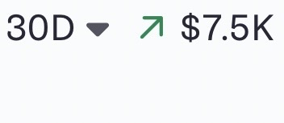
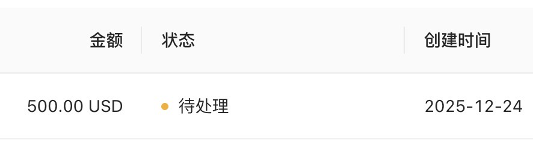
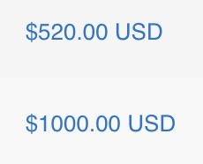
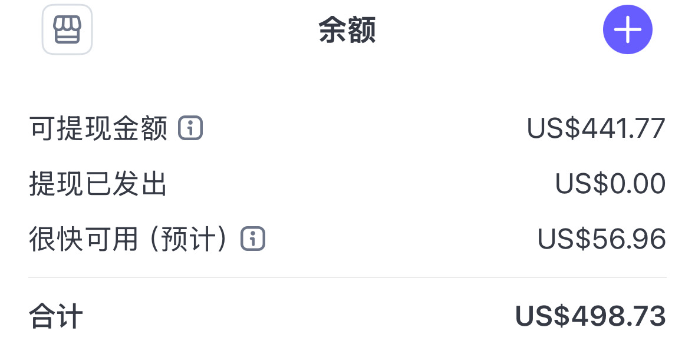
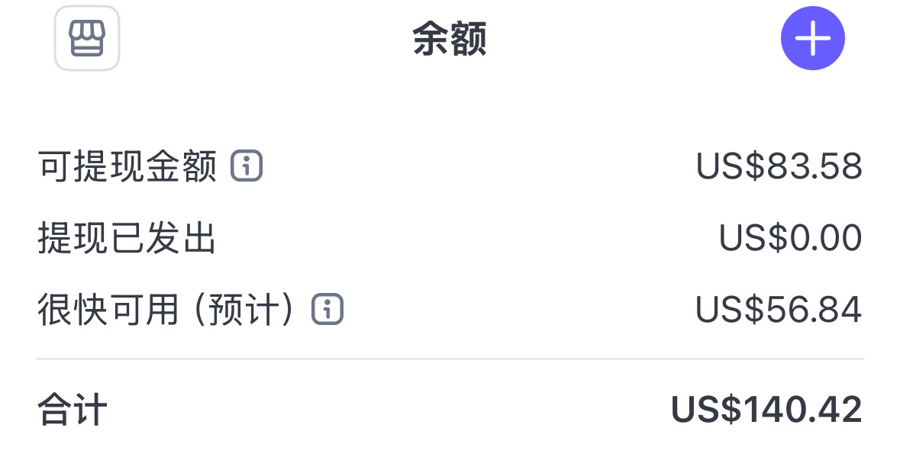
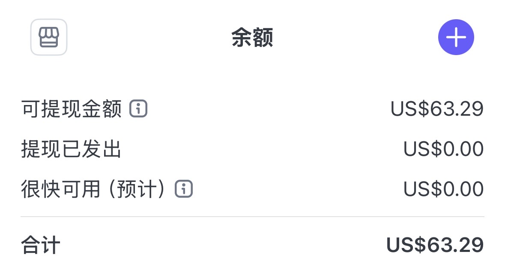

2025 最后一天汇总多个网站的收入数据，数字刚好卡在万刀线 —— 属实是意料之外的惊喜。
本来前 10 天两个主力站流量断崖式下跌，以为这个目标达不到，还好老客户，订阅续费，还有其他小站各自发力，硬是把我拽过了这个门槛。
虽然下个月未必达得到这个数，但对 2025 年的副业折腾来说，已经是个圆满的收尾。
真心感谢 @哥飞 的引路，还有群里各位群友的帮助，一群人一起走感觉真好！
回头看，从 6 月折腾到现在，踩过的坑很多 ，群友明明早就分享过避坑指南，可有些道理，非得自己摔一跤才懂。趁年末捋一捋，给 2026 的自己敲警钟：
1.聚焦才是王道
群友之前分享早就提醒过，拿到正反馈的站要死磕，把内页、外链做深做透，力往一处使才对。可我看到新词新需求就忍不住手痒，一个月能上十几站，还对着同一需求或同一新词囤好几个域名并全部上线。结果主站明明有大把优化、提升转化的空间，完全没精力没体力管；新站虽然都能跑出点流量，但也没力气放大。更别说每个新站砸进去的几百美金付费外链，很多新站的外链收录慢、对新词反应弱，实际也赶不上趟 —— 这些资源要是全砸主站，相信会有更好的排名跟流量。
2.身体是底牌，别透支
精力分散的直接后果，就是每天下班连轴转上站，熬到凌晨两三点是常态，白天还要上班。身体的损耗肉眼可见，这其实和 “不聚焦” 是恶性循环。之前线下见到哥飞的群友们，其实做出成绩的大家都很拼，但现在才懂：再大的欲望，都得有健康兜底。
3.抓准重心，不在琐事上内耗
面对找到的新需求，面对层出不穷的新词，前一两个月耗费大量时间上新站、美化新站、增加功能，现在回头看，纯属本末倒置。核心的内页建设、外链布局、广告投放全被耽误。更别说拖延症犯的时候，域名买了当天不上站，一拖就是好几天，网站没成型，心里又总挂着，导致心力又损耗。以后买域名就得当天或隔天落地，把时间留给真正能搞流量的事 —— 越难的事，越要优先做。
4.慢即是快，小满胜万全
哪怕是副业，也总想着 “多做一个站就多一个机会”。但其实在有较为不错的收入时，就该内心知足，而不该让贪念焦虑到自己。就像空弦说的，这就是在玩游戏，每个人的游戏目标是不一样的。是的，终究小满胜万全。与其贪多求快，幻想新站流量爆发，不如沉下心把核心产品做透、把推广做精。慢一点，稳一点，不焦虑，反而可能等到意想不到的惊喜。
2026，不求多，只求整合、聚焦、放大。慢下来，重新出发。





